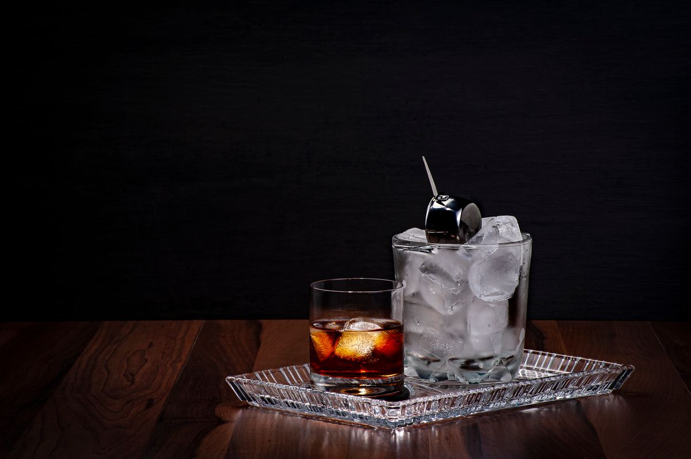
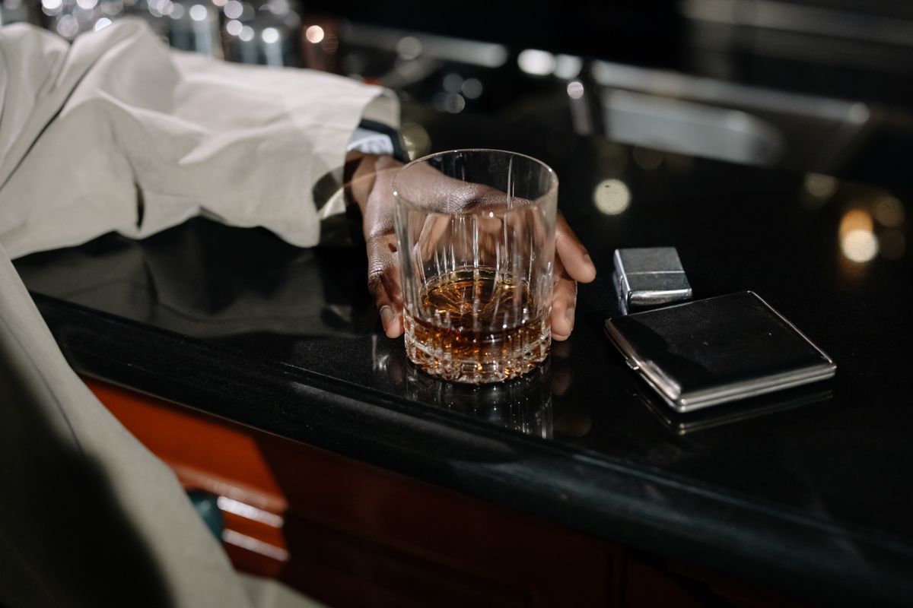
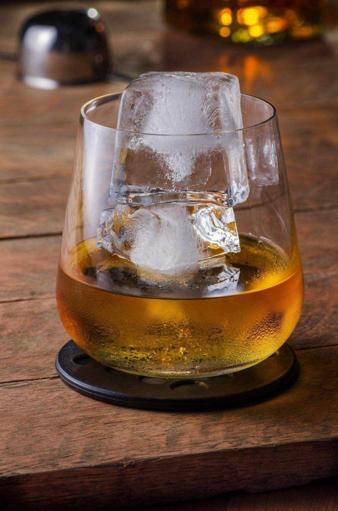

バーボンとの出会い
飲み慣れた一杯から、普段見かけない銘柄まで。新しい好みを探す楽しさを。

A QUIET NIGHT, A GLASS OF BOURBON.
長野・諏訪 ／ 上諏訪駅近く
線路沿い、その先に。
好みの一杯に出会う、諏訪の夜。
日〜木 19:00〜24:00／金・土 19:00〜翌1:00
通常の営業時間です。休業・変更はお電話でご確認ください。01 / ABOUT
諏訪・上諏訪駅近く、線路沿いにあるFujisans_Bar。バーボンを中心に、さまざまなウイスキーとの出会いが楽しめるバーです。
「少し甘めが好き」「今日はこのくらいの予算で」。そんなひとことから、マスターと一杯を選ぶ時間が始まります。お酒の特徴や飲み方を聞きながら、旅の途中にも、おひとりでも、ゆっくりと。
Googleマップの口コミの傾向をもとに構成しています
飲み慣れた一杯から、普段見かけない銘柄まで。新しい好みを探す楽しさを。
味わいも、予算も、飲み方も。詳しくなくても気軽に相談できる一杯を。
旅の終わりや、一日の締めくくりに。会話とお酒を、自分のペースで。
02 / THE GLASS
バーボンを中心に、味わいの違いを楽しむ。
【要確認：取り扱い本数・銘柄】

BOURBON
まずは、好みの味わいをひとこと。
【要確認：銘柄・メニュー】
WHISKY
【要確認：種類・銘柄・取り扱い】
OTHER DRINKS
【要確認：取り扱いの有無・メニュー】
一杯の目安【要確認：価格帯】
チャージ【要確認：金額・内容（ナッツ・チョコレート等）】
03 / YOUR FIRST VISIT
「ウイスキーは、まだ詳しくなくて」
そんな始まり方も、きっと楽しい。
好みの味と予算をお伝えください。
Googleマップの口コミの傾向をもとに構成しています

04 / HOURS & ACCESS
| 日〜木 | 19:00〜24:00 |
|---|---|
| 金・土 | 19:00〜翌1:00 |
【要確認：定休日（不定休か）】
ご来店前に、当日の営業状況をお電話またはInstagramでご確認ください。
最新情報はInstagramで ↗上諏訪駅から徒歩数分・線路沿い
【要確認：徒歩◯分・駅からの道順】
【要確認：駐車場・近隣コインパーキング等】
Googleマップで開く ↗地図は住所周辺を表示しています。正確な入口・建物名は確認中です。
05 / CONTACT
営業状況や、お席についてのお問い合わせはこちらへ。
電話する090-4153-6611最新情報はInstagramで ↗